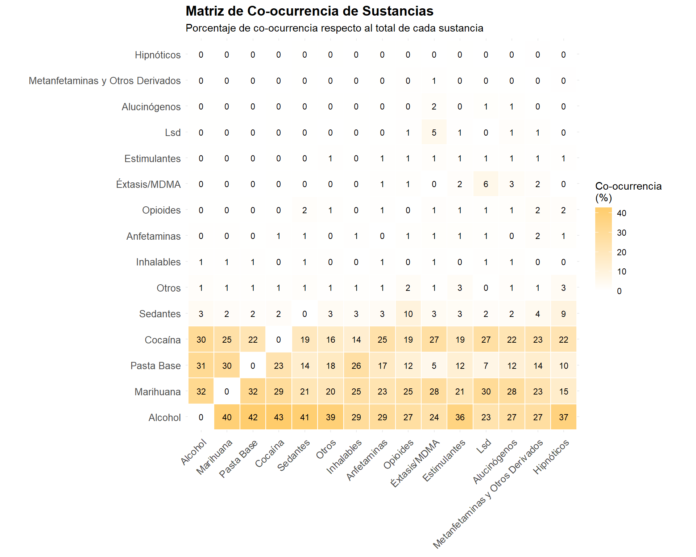
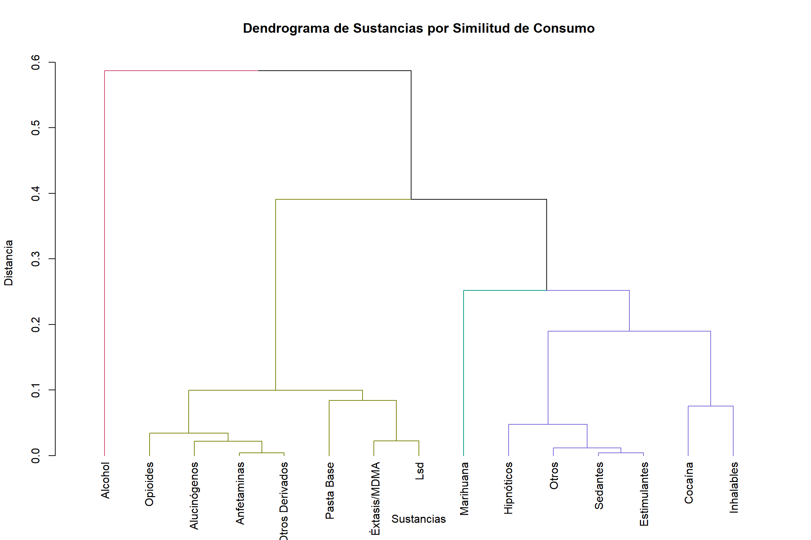

# Cargar librerías necesariaslibrary(tidyverse)library(igraph)library(tidygraph) # DEBE ir antes de ggraphlibrary(ggraph)library(kableExtra)library(DT)library(plotly)library(visNetwork)library(corrplot)library(RColorBrewer)library(patchwork)library(dendextend)# Configuración globaloptions(scipen =999)theme_set(theme_minimal())# Cargar datos limpiosdata <-readRDS(paste0(gsub("/docs", "", getwd()), "/data/CONS_C1_2010_22_CLEAN.rds"))# Función de simplificaciónsimplify_substance_names <-function(x) { x <-as.character(x) x[str_detect(x, "^Sin ")] <-NA x <-str_replace(x, "^Sedantes:.*", "Sedantes") x <-str_replace(x, "^Hipnóticos:.*", "Hipnóticos") x <-str_replace(x, "^Inhalables:.*", "Inhalables") x <-str_replace(x, "^Otros Opioides.*", "Opioides") x <-str_replace(x, "^Otros Estimulantes.*", "Estimulantes") x <-str_replace(x, "^Otros Alucinógenos.*", "Alucinógenos") x <-str_replace(x, "^Éxtasis.*", "Éxtasis/MDMA")return(x)}# Columnas de sustanciascols_sustancias <-c("sustancia_principal", "otras_sustancias_no1", "otras_sustancias_no2", "otras_sustancias_no3")# Aplicar limpiezadata_network <- data %>%select(HASH_KEY, all_of(cols_sustancias)) %>%mutate(across(all_of(cols_sustancias), simplify_substance_names)) %>%filter(!is.na(sustancia_principal))
2 DESCRIPCIÓN GENERAL DE LOS DATOS
Código
info_data <-data.frame( Característica =c("Total de registros","Registros con sustancia principal","Período de análisis","Variables de sustancias","Número de sustancias únicas","Promedio de sustancias por paciente","Mediana de sustancias por paciente","Desviación estándar"),Valor =c(format(nrow(data), big.mark =","),format(nrow(data_network), big.mark =","),"2010-2022",as.character(length(cols_sustancias)),as.character(n_distinct(unlist(data_network[cols_sustancias]), na.rm =TRUE)),round(mean(rowSums(!is.na(data_network[cols_sustancias]))), 2),median(rowSums(!is.na(data_network[cols_sustancias]))),round(sd(rowSums(!is.na(data_network[cols_sustancias]))), 2)))info_data %>%kable(format ="html", col.names =c("Característica", "Valor"),align =c("l", "r")) %>%kable_styling(bootstrap_options =c("striped", "hover"),full_width =FALSE)
Top 15 pares de sustancias con mayor co-ocurrencia
Par de Sustancias
Co-ocurrencias
Alcohol ↔︎ Marihuana
74757
Alcohol ↔︎ Pasta Base
71783
Alcohol ↔︎ Cocaína
69780
Marihuana ↔︎ Pasta Base
55791
Cocaína ↔︎ Marihuana
47950
Cocaína ↔︎ Pasta Base
37270
Alcohol ↔︎ Sedantes
7551
Marihuana ↔︎ Sedantes
3886
Cocaína ↔︎ Sedantes
3472
Alcohol ↔︎ Otros
3165
Pasta Base ↔︎ Sedantes
2608
Marihuana ↔︎ Otros
1639
Otros ↔︎ Pasta Base
1412
Cocaína ↔︎ Otros
1286
Alcohol ↔︎ Inhalables
1182
4.3 Propiedades Estructurales
Código
network_props_co <-data.frame(Propiedad =c("Número de nodos","Número de enlaces","Densidad de la red","Diámetro","Distancia media","Coeficiente de clustering global","Coeficiente de clustering promedio","Transitividad","Asortatividad por grado","Componentes conectados","Tamaño del componente gigante","Comunidades detectadas","Modularidad"),Valor =c(vcount(g_co),ecount(g_co),round(edge_density(g_co), 4),diameter(g_co, weights =NA),round(mean_distance(g_co, weights =NA), 2),round(transitivity(g_co, type ="global"), 3),round(transitivity(g_co, type ="average"), 3),round(transitivity(g_co), 3),round(assortativity_degree(g_co), 3),components(g_co)$no,max(components(g_co)$csize),length(communities_co),round(modularity(communities_co), 3)))network_props_co %>%kable(format ="html",col.names =c("Propiedad de la Red", "Valor"),align =c("l", "r")) %>%kable_styling(bootstrap_options =c("striped", "hover"),full_width =FALSE)
Propiedades estructurales de la red de co-ocurrencia
Composición de las comunidades detectadas - Red Co-ocurrencia
Comunidad
Tamaño
Principales Sustancias
Fuerza Total
Fuerza Media
Fuerza Máx
1
12
Alcohol, Marihuana, Pasta Base, Cocaína
788286
65690
230800
4.7 Medidas de Centralización
Código
centralization_co <-data.frame(Medida =c("Centralización de Grado","Centralización de Cercanía","Centralización de Intermediación","Centralización de Eigenvector"),Valor =c(round(centr_degree(g_co)$centralization, 4),round(centr_clo(g_co)$centralization, 4),round(centr_betw(g_co)$centralization, 4),round(centr_eigen(g_co)$centralization, 4)), Interpretación =c("Concentración de conexiones directas","Concentración de accesibilidad","Concentración de control de flujo","Concentración de influencia"))centralization_co %>%kable(format ="html",align =c("l", "r", "l")) %>%kable_styling(bootstrap_options =c("striped", "hover"),full_width =FALSE)
Medidas de centralización de la red de co-ocurrencia
Composición de las comunidades detectadas - Proyección Bipartita
Comunidad
Tamaño
Principales Sustancias
Fuerza Total
Fuerza Media
Fuerza Máx
1
16
Alcohol, Marihuana, Cocaína, Pasta Base
34407
2150
7585
2
3
Éxtasis/MDMA, Lsd, Hongos
2087
696
871
3
3
Heroína, Metadona, Fenilciclidina
258
86
186
5.8 Medidas de Centralización
Código
centralization_bi <-data.frame(Medida =c("Centralización de Grado","Centralización de Cercanía", "Centralización de Intermediación","Centralización de Eigenvector"),Valor =c(round(centr_degree(g_substances)$centralization, 4),round(centr_clo(g_substances)$centralization, 4),round(centr_betw(g_substances)$centralization, 4),round(centr_eigen(g_substances)$centralization, 4)), Interpretación =c("Concentración de conexiones directas","Concentración de accesibilidad","Concentración de control de flujo","Concentración de influencia"))centralization_bi %>%kable(format ="html",align =c("l", "r", "l")) %>%kable_styling(bootstrap_options =c("striped", "hover"),full_width =FALSE)
Medidas de centralización de la proyección bipartita
# Seleccionar top sustanciastop_n <-15top_substances <-names(sort(rowSums(co_matrix), decreasing =TRUE)[1:top_n])co_matrix_subset <- co_matrix[top_substances, top_substances]# Normalizar por filaco_matrix_norm <-sweep(co_matrix_subset, 1, pmax(rowSums(co_matrix_subset), 1), "/") *100# Convertir a formato largoco_matrix_long <-as.data.frame(as.table(co_matrix_norm)) %>%rename(Sustancia1 = Var1, Sustancia2 = Var2, Porcentaje = Freq)ggplot(co_matrix_long, aes(x = Sustancia1, y = Sustancia2, fill = Porcentaje)) +geom_tile(color ="white", size =0.5) +geom_text(aes(label =round(Porcentaje, 0)), size =3, color ="black") +scale_fill_gradient2(low ="white", mid ="#FEC44F", high ="#D95F0E",midpoint =50,name ="Co-ocurrencia\n(%)") +labs(x =NULL, y =NULL,title ="Matriz de Co-ocurrencia de Sustancias",subtitle ="Porcentaje de co-ocurrencia respecto al total de cada sustancia") +theme_minimal() +theme(axis.text.x =element_text(angle =45, hjust =1, size =10),axis.text.y =element_text(size =10),plot.title =element_text(size =14, face ="bold"),legend.position ="right") +coord_fixed()

Matriz de co-ocurrencia de las sustancias más frecuentes
6.2 Dendrograma de Comunidades
Código
# Calcular distancia basada en co-ocurrenciadist_matrix <-1-cor(t(co_matrix[top_substances, top_substances]))dist_matrix[is.na(dist_matrix)] <-1# Clustering jerárquicohc <-hclust(as.dist(dist_matrix), method ="ward.D2")# Crear dendrograma mejoradodend <-as.dendrogram(hc)dend <-color_branches(dend, k =4)plot(dend, main ="Dendrograma de Sustancias por Similitud de Consumo",xlab ="Sustancias", ylab ="Distancia")

Dendrograma de comunidades basado en similitud
7 ANÁLISIS COMPARATIVO
7.1 Comparación de Propiedades Estructurales
Código
comparison_props <-data.frame(Propiedad =c("Número de nodos (sustancias)","Número de enlaces","Densidad","Diámetro","Distancia media","Clustering global","Clustering promedio","Asortatividad","Comunidades","Modularidad","K-Core máximo"),`Red Co-ocurrencia`=c(vcount(g_co),ecount(g_co),round(edge_density(g_co), 4),diameter(g_co, weights =NA),round(mean_distance(g_co, weights =NA), 2),round(transitivity(g_co, type ="global"), 3),round(transitivity(g_co, type ="average"), 3),round(assortativity_degree(g_co), 3),length(communities_co),round(modularity(communities_co), 3),max(coreness_co) ),`Red Bipartita (Proyección)`=c(vcount(g_substances),ecount(g_substances),round(edge_density(g_substances), 4),diameter(g_substances, weights =NA),round(mean_distance(g_substances, weights =NA), 2),round(transitivity(g_substances, type ="global"), 3),round(transitivity(g_substances, type ="average"), 3),round(assortativity_degree(g_substances), 3),length(communities_proj),round(modularity(communities_proj), 3),max(coreness_bi) ))comparison_props %>%kable(format ="html",align =c("l", "r", "r")) %>%kable_styling(bootstrap_options =c("striped", "hover"),full_width =FALSE) %>%column_spec(1, bold =TRUE)
Comparación de propiedades entre ambas redes
Propiedad
Red.Co.ocurrencia
Red.Bipartita..Proyección.
Número de nodos (sustancias)
12.0000
22.0000
Número de enlaces
29.0000
188.0000
Densidad
0.4394
0.8139
Diámetro
3.0000
2.0000
Distancia media
1.5900
1.1900
Clustering global
0.5780
0.8840
Clustering promedio
0.8090
0.9070
Asortatividad
-0.6500
-0.2600
Comunidades
1.0000
3.0000
Modularidad
0.0000
0.0040
K-Core máximo
4.0000
15.0000
7.2 Comparación de Centralización
Código
# Calcular valores de centralizaciónco_oc_values <-c(round(centr_degree(g_co)$centralization, 4),round(centr_clo(g_co)$centralization, 4),round(centr_betw(g_co)$centralization, 4),round(centr_eigen(g_co)$centralization, 4))bipartita_values <-c(round(centr_degree(g_substances)$centralization, 4),round(centr_clo(g_substances)$centralization, 4),round(centr_betw(g_substances)$centralization, 4),round(centr_eigen(g_substances)$centralization, 4))comparison_centr <-data.frame(Medida =c("Centralización de Grado","Centralización de Cercanía","Centralización de Intermediación","Centralización de Eigenvector"),Co_ocurrencia = co_oc_values,Bipartita = bipartita_values,Diferencia =round(co_oc_values - bipartita_values, 4))comparison_centr %>%kable(format ="html",col.names =c("Medida", "Co-ocurrencia", "Bipartita", "Diferencia"),align =c("l", "r", "r", "r")) %>%kable_styling(bootstrap_options =c("striped", "hover"),full_width =FALSE) %>%column_spec(1, bold =TRUE)
Análisis de sustancias gateway basado en centralidad
Sustancia
Grado
Intermediación
Eigenvector
PageRank
Score Gateway
Interpretación
Alcohol
Alcohol
9
0.182
1.000
0.2659
0.770
Muy Alta probabilidad gateway
Marihuana
Marihuana
10
0.218
0.879
0.2227
0.734
Muy Alta probabilidad gateway
Cocaína
Cocaína
9
0.273
0.790
0.1867
0.666
Alta probabilidad gateway
Pasta Base
Pasta Base
7
0.109
0.831
0.1887
0.587
Alta probabilidad gateway
Anfetaminas
Anfetaminas
4
0.164
0.018
0.0160
0.161
Baja probabilidad gateway
Sedantes
Sedantes
4
0.000
0.088
0.0297
0.150
Baja probabilidad gateway
Opioides
Opioides
3
0.182
0.010
0.0145
0.137
Baja probabilidad gateway
Otros
Otros
4
0.000
0.037
0.0198
0.128
Baja probabilidad gateway
Inhalables
Inhalables
4
0.000
0.019
0.0162
0.120
Baja probabilidad gateway
Éxtasis/MDMA
Éxtasis/MDMA
2
0.036
0.005
0.0136
0.073
Baja probabilidad gateway
8.3 Recomendaciones Basadas en el Análisis
Código
# Preparar datos para recomendacionestop_hub <- centrality_metrics_co$Sustancia[1]top_gateway <- gateway_analysis$Sustancia[1]n_communities_total <-max(length(communities_co), length(communities_bi))high_risk_percent <- risk_summary %>%filter(risk_category %in%c("Muy Alto", "Alto")) %>%summarise(total =sum(Porcentaje)) %>%pull(total)recommendations <-data.frame( Área =c("Prevención Primaria","Intervención Temprana","Tratamiento Especializado","Reducción de Daños","Monitoreo y Seguimiento","Investigación" ),Hallazgo_Clave =c(paste(top_gateway, "identificada como principal sustancia gateway"),paste(round(100- combo_stats$Porcentaje[1], 1), "% presenta policonsumo"),paste(n_communities_total, "patrones distintos de consumo identificados"),paste(top_hub, "es la sustancia más central en la red"),paste(high_risk_percent, "% en categorías de alto riesgo"),"Correlaciones moderadas-altas entre métricas de redes" ), Recomendación =c("Focalizar campañas preventivas en sustancias gateway identificadas","Implementar screening sistemático para detectar policonsumo temprano","Desarrollar protocolos específicos por patrón de consumo","Priorizar intervenciones en sustancias hub de la red","Establecer seguimiento intensivo para pacientes de alto riesgo","Profundizar en el estudio de las redes de consumo para mejorar intervenciones" ))recommendations %>%kable(format ="html",align =c("l", "l", "l")) %>%kable_styling(bootstrap_options =c("striped", "hover"),full_width =TRUE) %>%column_spec(1, bold =TRUE, width ="20%") %>%column_spec(2, width ="35%") %>%column_spec(3, width ="45%")
Recomendaciones clínicas basadas en análisis de redes
Área
Hallazgo_Clave
Recomendación
Prevención Primaria
Alcohol identificada como principal sustancia gateway
Focalizar campañas preventivas en sustancias gateway identificadas
Intervención Temprana
71 % presenta policonsumo
Implementar screening sistemático para detectar policonsumo temprano
Tratamiento Especializado
7 patrones distintos de consumo identificados
Desarrollar protocolos específicos por patrón de consumo
Reducción de Daños
Alcohol es la sustancia más central en la red
Priorizar intervenciones en sustancias hub de la red
Monitoreo y Seguimiento
35.9 % en categorías de alto riesgo
Establecer seguimiento intensivo para pacientes de alto riesgo
Investigación
Correlaciones moderadas-altas entre métricas de redes
Profundizar en el estudio de las redes de consumo para mejorar intervenciones
9 CONCLUSIONES
Código
conclusions <-data.frame(Aspecto =c("Prevalencia de policonsumo","Sustancia más conectada (co-ocurrencia)","Sustancia más frecuente (bipartita)","Estructura de red predominante","Comunidades detectadas (promedio)","Pacientes de alto riesgo","Principal patrón de consumo","Sustancia gateway principal","Clustering promedio","Modularidad promedio" ),Hallazgo =c(paste0(round(100- combo_stats$Porcentaje[1], 1), "%"), centrality_metrics_co$Sustancia[1], centrality_metrics_bi$Sustancia[1],ifelse(mean(c(centralization_co$Valor[1], centralization_bi$Valor[1])) >0.5,"Centralizada", "Distribuida"),paste(round(mean(c(length(communities_co), length(communities_proj))), 0), "comunidades"),paste0(high_risk_percent, "%"), triads$triad[1], gateway_analysis$Sustancia[1],round(mean(c(transitivity(g_co, type ="average"), transitivity(g_substances, type ="average"))), 3),round(mean(c(modularity(communities_co), modularity(communities_proj))), 3) ))conclusions %>%kable(format ="html",col.names =c("Aspecto Analizado", "Hallazgo Principal"),align =c("l", "l")) %>%kable_styling(bootstrap_options =c("striped", "hover"),full_width =FALSE) %>%column_spec(1, bold =TRUE, width ="40%") %>%column_spec(2, width ="60%")
![]()